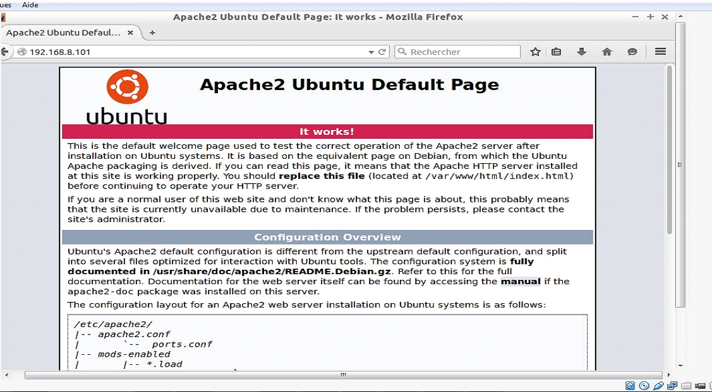
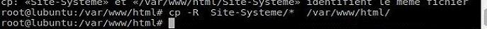
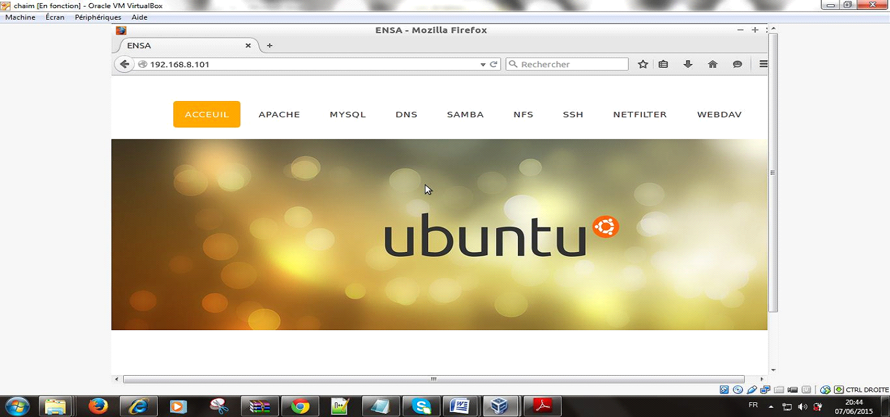
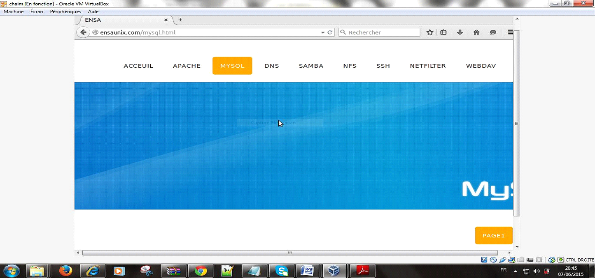

Voila avec la véfication sur la page web

Maintenant nous voulons que cette page devienne notre site hébergé sous Unix d’adresse :
ensaunix.com et adresse IP 192.168.8.101
Pour faire cette transition on change tout d’abord le fichier index.html dans l’index par un autre nom ,
puis on transfert le dossier qui contient tous les fichiers de notre site (Site-Système) au répertoire /var/www/html

Avec l’adresse IP

Avec le nom de domaine :
